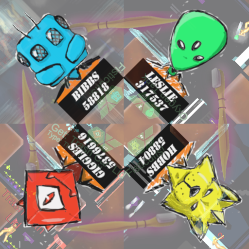

|
 Privacy PolicyThe team who created Star Cooler Carnage does not wish to collect any of your data (although we are sure you are a very interesting person … it's not you, it's us). But… This game was made with Unity and they collect some device information to stay on top of the types of hardware they need to support: From their privacy policy (found here): I play a game that was built with or uses certain Unity software, what should I know? Unity has collected some or all of the following information about your device: unique device identifiers (e.g., IDFV for iOS devices and Android ID for Android devices); IP address; country of install (mapped from IP address); device manufacturer and model platform type (iOS, Android, Mac, Windows, etc.) and the operating system and version running on your system or device; language; CPU information such as model, the number of CPUs present, frequency, and instruction set support flags; the graphics card type and vendor name; graphics card driver name and version (e.g., “nv4disp.dll 6.10.93.71”); which graphics API is in use (e.g., “OpenGL 2.1” or “Direct3D 9.0c”); amount of system and video RAM present; current screen resolution; version of the Unity Editor used to create the game; sensor flags (e.g., device support for gyroscope, touch pressure or accelerometer); application or bundle identification (“app ID”) of the game installed; unique advertising identifiers provided for iOS and Android devices (e.g., IDFA or Android Ad ID); and a checksum of all the data that gets sent to verify that it transmitted correctly. PermissionsWe ask for the Internet Permission because of Unity's information collection. You do not have to be connected to the internet to play the game at any time.Enjoy. |